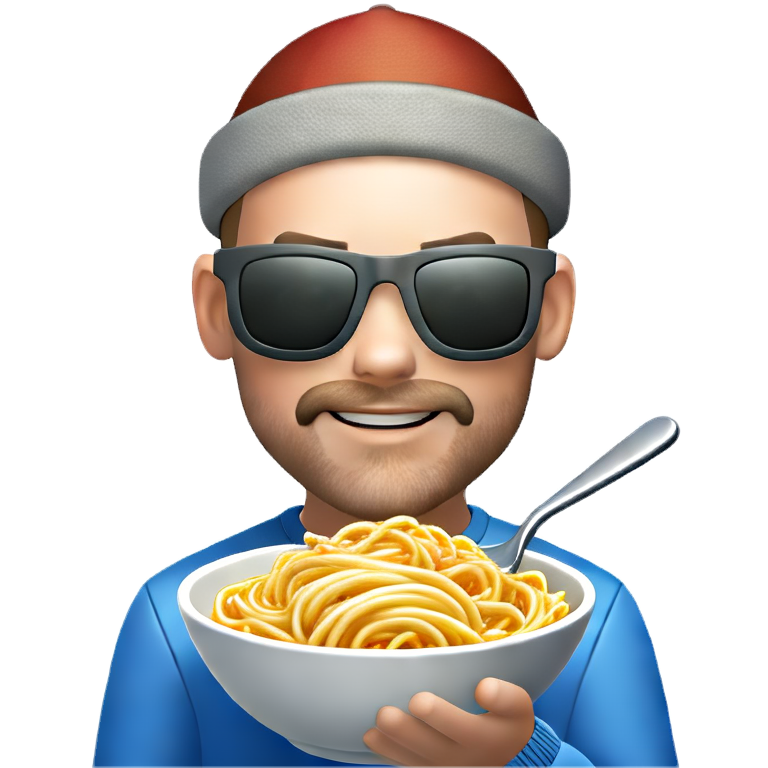

<!doctype html>
<html lang="en">
  <head>
    <meta charset="UTF-8" />
    <meta name="viewport" content="width=device-width, initial-scale=1.0" />
    <title>The Kyleissimo Verb Bistro</title>
    <style>
      @import url("https://fonts.googleapis.com/css2?family=Crimson+Pro:wght@400;500;600;700&family=DM+Sans:wght@400;500;600&display=swap");
      * {
        box-sizing: border-box;
      }
      body {
        margin: 0;
        background: radial-gradient(circle at 10% 20%, #fff0d8 0%, #fff8f2 30%, #f1f4ff 65%, #ffe7f2 100%);
        background-size: 240% 240%;
        animation: bgShift 20s ease-in-out infinite;
        font-family: "Crimson Pro", Georgia, serif;
        padding: 24px;
      }
      .verb-card {
        transition: all 0.2s ease;
        cursor: pointer;
        position: relative;
        overflow: hidden;
        backdrop-filter: blur(4px);
      }
      .verb-card::after {
        content: "";
        position: absolute;
        inset: 0;
        opacity: 0;
        background: radial-gradient(circle at 20% 20%, rgba(255, 255, 255, 0.35), transparent 40%),
          radial-gradient(circle at 80% 80%, rgba(255, 255, 255, 0.28), transparent 55%);
        transition: opacity 0.2s ease;
      }
      .verb-card:hover {
        transform: translateY(-2px);
        box-shadow: 0 8px 24px rgba(139, 90, 43, 0.15);
        border-color: rgba(0, 0, 0, 0.05);
      }
      .verb-card:hover::after {
        opacity: 1;
      }
      .verb-card.selected {
        background: linear-gradient(135deg, #8b5a2b 0%, #a0522d 100%);
        color: white;
        animation: pop 0.4s ease;
      }
      .category-pill {
        transition: all 0.2s ease;
        cursor: pointer;
        padding: 8px 14px;
        border-radius: 999px;
        background: rgba(139, 90, 43, 0.06);
        font-family: "DM Sans", sans-serif;
        font-size: 13px;
        font-weight: 500;
        color: #5a4a3a;
        border: 1px solid transparent;
      }
      .category-pill:hover {
        background: rgba(139, 90, 43, 0.12);
        transform: translateY(-1px);
      }
      .category-pill.selected {
        background: #3d2914;
        color: #f7f0e6;
        border-color: rgba(0, 0, 0, 0.2);
        box-shadow: 0 4px 12px rgba(61, 41, 20, 0.25);
        animation: pulseGlow 1.4s ease-in-out infinite alternate;
      }
      .tense-tab {
        transition: all 0.2s ease;
        cursor: pointer;
        border: 2px solid transparent;
        transform: translateY(0);
      }
      .tense-tab:hover {
        background: rgba(139, 90, 43, 0.08);
        transform: translateY(-2px) rotate(-0.5deg);
      }
      .tense-tab.selected {
        background: white;
        border-color: #8b5a2b;
        box-shadow: 0 4px 12px rgba(139, 90, 43, 0.15);
        animation: wiggle 1s ease-in-out;
      }
      .conjugation-row {
        transition: background 0.15s ease;
        position: relative;
        overflow: hidden;
      }
      .conjugation-row:nth-child(odd) {
        background: linear-gradient(90deg, rgba(139, 90, 43, 0.02), rgba(255, 255, 255, 0));
      }
      .conjugation-row:hover {
        background: rgba(139, 90, 43, 0.04);
        transform: translateX(2px);
      }
      .toggle-btn {
        transition: all 0.2s ease;
        position: relative;
      }
      .toggle-btn:hover {
        transform: scale(1.02);
        box-shadow: 0 6px 18px rgba(139, 90, 43, 0.25);
      }
      input:focus {
        outline: none;
        border-color: #8b5a2b;
        box-shadow: 0 0 0 3px rgba(139, 90, 43, 0.1);
      }
      .hero-card {
        position: relative;
        overflow: hidden;
        display: grid;
        grid-template-columns: 2fr 1fr;
        gap: 18px;
        align-items: center;
        background: linear-gradient(130deg, #ffe6b7 0%, #ffc7d8 35%, #cde4ff 90%);
        border-radius: 26px;
        padding: 28px 32px;
        box-shadow: 0 20px 44px rgba(139, 90, 43, 0.16);
        border: 2px solid rgba(255, 255, 255, 0.7);
        animation: bounceIn 0.8s ease;
      }
      .hero-card::after {
        content: "";
        position: absolute;
        inset: 0;
        background: radial-gradient(circle at 80% 20%, rgba(255, 255, 255, 0.45), transparent 35%),
          radial-gradient(circle at 15% 80%, rgba(255, 255, 255, 0.35), transparent 45%);
        pointer-events: none;
      }
      .hero-badge {
        display: inline-flex;
        align-items: center;
        gap: 6px;
        padding: 8px 12px;
        border-radius: 999px;
        background: rgba(255, 255, 255, 0.7);
        color: #8b5a2b;
        font-family: "DM Sans", sans-serif;
        font-weight: 700;
        text-transform: uppercase;
        letter-spacing: 1px;
        font-size: 12px;
        box-shadow: 0 4px 14px rgba(0, 0, 0, 0.06);
      }
      .hero-mascot {
        position: relative;
        justify-self: center;
      }
      .hero-mascot img {
        width: 150px;
        max-width: 100%;
        filter: drop-shadow(0 12px 20px rgba(0, 0, 0, 0.15));
        animation: floaty 4.5s ease-in-out infinite;
      }
      .hero-mascot::after {
        content: "";
        position: absolute;
        inset: auto 12% -12px 12%;
        height: 18px;
        background: radial-gradient(ellipse at center, rgba(0, 0, 0, 0.18), transparent 60%);
        filter: blur(10px);
        opacity: 0.7;
      }
      .speech-bubble {
        position: absolute;
        top: -8px;
        right: -8px;
        background: white;
        border-radius: 12px;
        padding: 10px 12px;
        font-family: "DM Sans", sans-serif;
        font-weight: 700;
        color: #8b5a2b;
        box-shadow: 0 8px 20px rgba(0, 0, 0, 0.12);
        animation: wiggle 1.4s ease-in-out infinite alternate;
      }
      .speech-bubble::after {
        content: "";
        position: absolute;
        bottom: -8px;
        left: 14px;
        width: 14px;
        height: 14px;
        background: white;
        transform: rotate(45deg);
      }
      .confetti-dot {
        position: absolute;
        border-radius: 50%;
        animation: floaty 6s ease-in-out infinite;
        opacity: 0.6;
      }
      .confetti-dot.one {
        width: 12px;
        height: 12px;
        background: #ff8fb1;
        top: 12%;
        left: 8%;
        animation-duration: 7s;
      }
      .confetti-dot.two {
        width: 10px;
        height: 10px;
        background: #7ec4ff;
        top: 18%;
        right: 6%;
        animation-duration: 8s;
        animation-delay: 0.5s;
      }
      .confetti-dot.three {
        width: 14px;
        height: 14px;
        background: #ffd166;
        bottom: 10%;
        left: 14%;
        animation-duration: 9s;
        animation-delay: 0.2s;
      }
      .example-card {
        position: relative;
        overflow: hidden;
      }
      .example-card::before {
        content: "";
        position: absolute;
        inset: -40%;
        background: conic-gradient(from 90deg, rgba(255, 255, 255, 0.2), rgba(255, 255, 255, 0), rgba(255, 255, 255, 0.25), rgba(255, 255, 255, 0));
        animation: spin 10s linear infinite;
        opacity: 0.6;
      }
      .example-card > * {
        position: relative;
        z-index: 1;
      }
      .rainbow-underline {
        background: linear-gradient(120deg, #1fbf5a 0%, #ffffff 50%, #e63946 100%);
        background-size: 180% 100%;
        -webkit-background-clip: text;
        color: transparent;
        animation: flagWave 4s ease-in-out infinite;
      }
      @keyframes bgShift {
        0% {
          background-position: 0% 50%;
        }
        50% {
          background-position: 100% 50%;
        }
        100% {
          background-position: 0% 50%;
        }
      }
      @keyframes floaty {
        0% {
          transform: translateY(0);
        }
        50% {
          transform: translateY(-6px);
        }
        100% {
          transform: translateY(0);
        }
      }
      @keyframes wiggle {
        0% {
          transform: rotate(0deg);
        }
        25% {
          transform: rotate(-1.5deg);
        }
        50% {
          transform: rotate(1.5deg);
        }
        100% {
          transform: rotate(0deg);
        }
      }
      @keyframes pulseGlow {
        0% {
          box-shadow: 0 0 0 0 rgba(139, 90, 43, 0.35);
        }
        100% {
          box-shadow: 0 0 0 12px rgba(139, 90, 43, 0);
        }
      }
      @keyframes pop {
        0% {
          transform: scale(1);
        }
        50% {
          transform: scale(1.02);
        }
        100% {
          transform: scale(1);
        }
      }
      @keyframes bounceIn {
        0% {
          transform: translateY(12px);
          opacity: 0;
        }
        100% {
          transform: translateY(0);
          opacity: 1;
        }
      }
      @keyframes spin {
        0% {
          transform: rotate(0deg);
        }
        100% {
          transform: rotate(360deg);
        }
      }
      @keyframes flagWave {
        0% {
          background-position: 0% 50%;
        }
        50% {
          background-position: 100% 50%;
        }
        100% {
          background-position: 0% 50%;
        }
      }
    </style>
  </head>
  <body>
    <div id="app" style="max-width: 1100px; margin: 0 auto;"></div>

    <script>
      (() => {
        /**
         * DATA: Manual verbs (19) and generated verbs (81)
         */
        const manualVerbs = {
          essere: {
            infinitive: "essere",
            english: "to be",
            category: "Essentials",
            tenses: {
              present: {
                name: "Right Now / Always True",
                explanation:
                  "Use this when something IS happening now, or is always true about someone.",
                conjugations: {
                  io: "sono",
                  tu: "sei",
                  lui: "è",
                  noi: "siamo",
                  voi: "siete",
                  loro: "sono",
                },
                example: { italian: "Io sono stanco.", english: "I am tired." },
              },
              passato: {
                name: "Something That Happened",
                explanation:
                  "Use this when something happened and it's done - like 'I was at the party.'",
                conjugations: {
                  io: "sono stato/a",
                  tu: "sei stato/a",
                  lui: "è stato/a",
                  noi: "siamo stati/e",
                  voi: "siete stati/e",
                  loro: "sono stati/e",
                },
                example: { italian: "Sono stato a Roma.", english: "I was in Rome." },
              },
              imperfect: {
                name: "Used To / Was Being",
                explanation:
                  "For things that happened repeatedly in the past, or describing how things were.",
                conjugations: {
                  io: "ero",
                  tu: "eri",
                  lui: "era",
                  noi: "eravamo",
                  voi: "eravate",
                  loro: "erano",
                },
                example: {
                  italian: "Quando ero giovane, ero felice.",
                  english: "When I was young, I was happy.",
                },
              },
              future: {
                name: "Will Happen",
                explanation: "For things that will happen in the future.",
                conjugations: {
                  io: "sarò",
                  tu: "sarai",
                  lui: "sarà",
                  noi: "saremo",
                  voi: "sarete",
                  loro: "saranno",
                },
                example: {
                  italian: "Domani sarò a casa.",
                  english: "Tomorrow I will be at home.",
                },
              },
              conditional: {
                name: "Would Be",
                explanation: "For hypothetical situations - 'I would be happy if...'",
                conjugations: {
                  io: "sarei",
                  tu: "saresti",
                  lui: "sarebbe",
                  noi: "saremmo",
                  voi: "sareste",
                  loro: "sarebbero",
                },
                example: {
                  italian: "Sarei felice di aiutarti.",
                  english: "I would be happy to help you.",
                },
              },
              subjunctive: {
                name: "Hopes & Doubts",
                explanation:
                  "Used after phrases like 'I think that...', 'I hope that...', 'I doubt that...'",
                conjugations: {
                  io: "sia",
                  tu: "sia",
                  lui: "sia",
                  noi: "siamo",
                  voi: "siate",
                  loro: "siano",
                },
                example: {
                  italian: "Spero che tu sia felice.",
                  english: "I hope that you are happy.",
                },
              },
              impSubjunctive: {
                name: "If I Were...",
                explanation:
                  "For hypothetical 'if' situations in the past - 'If I were rich...'",
                conjugations: {
                  io: "fossi",
                  tu: "fossi",
                  lui: "fosse",
                  noi: "fossimo",
                  voi: "foste",
                  loro: "fossero",
                },
                example: {
                  italian: "Se fossi ricco, viaggerei.",
                  english: "If I were rich, I would travel.",
                },
              },
            },
          },
          avere: {
            infinitive: "avere",
            english: "to have",
            category: "Essentials",
            tenses: {
              present: {
                name: "Right Now / Always True",
                explanation: "Use this when someone HAS something now.",
                conjugations: {
                  io: "ho",
                  tu: "hai",
                  lui: "ha",
                  noi: "abbiamo",
                  voi: "avete",
                  loro: "hanno",
                },
                example: {
                  italian: "Ho fame.",
                  english: "I'm hungry. (I have hunger)",
                },
              },
              passato: {
                name: "Something That Happened",
                explanation: "When you had something at a specific moment.",
                conjugations: {
                  io: "ho avuto",
                  tu: "hai avuto",
                  lui: "ha avuto",
                  noi: "abbiamo avuto",
                  voi: "avete avuto",
                  loro: "hanno avuto",
                },
                example: {
                  italian: "Ho avuto una bella giornata.",
                  english: "I had a nice day.",
                },
              },
              imperfect: {
                name: "Used To / Was Having",
                explanation: "For things you used to have, or ongoing states in the past.",
                conjugations: {
                  io: "avevo",
                  tu: "avevi",
                  lui: "aveva",
                  noi: "avevamo",
                  voi: "avevate",
                  loro: "avevano",
                },
                example: {
                  italian: "Da bambino avevo un cane.",
                  english: "As a child I had a dog.",
                },
              },
              future: {
                name: "Will Have",
                explanation: "For things you will have.",
                conjugations: {
                  io: "avrò",
                  tu: "avrai",
                  lui: "avrà",
                  noi: "avremo",
                  voi: "avrete",
                  loro: "avranno",
                },
                example: {
                  italian: "Domani avrò tempo.",
                  english: "Tomorrow I will have time.",
                },
              },
              conditional: {
                name: "Would Have",
                explanation: "Hypothetical having - 'I would have more time if...'",
                conjugations: {
                  io: "avrei",
                  tu: "avresti",
                  lui: "avrebbe",
                  noi: "avremmo",
                  voi: "avreste",
                  loro: "avrebbero",
                },
                example: {
                  italian: "Avrei fame se non mangiassi.",
                  english: "I would be hungry if I didn't eat.",
                },
              },
              subjunctive: {
                name: "Hopes & Doubts",
                explanation: "After expressions of doubt, hope, or uncertainty.",
                conjugations: {
                  io: "abbia",
                  tu: "abbia",
                  lui: "abbia",
                  noi: "abbiamo",
                  voi: "abbiate",
                  loro: "abbiano",
                },
                example: {
                  italian: "Credo che lui abbia ragione.",
                  english: "I think that he is right.",
                },
              },
              impSubjunctive: {
                name: "If I Had...",
                explanation: "For hypothetical 'if' situations.",
                conjugations: {
                  io: "avessi",
                  tu: "avessi",
                  lui: "avesse",
                  noi: "avessimo",
                  voi: "aveste",
                  loro: "avessero",
                },
                example: {
                  italian: "Se avessi soldi, comprerei una casa.",
                  english: "If I had money, I would buy a house.",
                },
              },
            },
          },
          fare: {
            infinitive: "fare",
            english: "to do / to make",
            category: "Essentials",
            tenses: {
              present: {
                name: "Right Now / Always True",
                explanation: "What you're doing or making now, or do regularly.",
                conjugations: {
                  io: "faccio",
                  tu: "fai",
                  lui: "fa",
                  noi: "facciamo",
                  voi: "fate",
                  loro: "fanno",
                },
                example: {
                  italian: "Faccio colazione alle otto.",
                  english: "I have breakfast at eight.",
                },
              },
              passato: {
                name: "Something That Happened",
                explanation: "Something you did or made.",
                conjugations: {
                  io: "ho fatto",
                  tu: "hai fatto",
                  lui: "ha fatto",
                  noi: "abbiamo fatto",
                  voi: "avete fatto",
                  loro: "hanno fatto",
                },
                example: {
                  italian: "Ho fatto una torta.",
                  english: "I made a cake.",
                },
              },
              imperfect: {
                name: "Used To Do",
                explanation: "What you used to do, or were doing at a moment.",
                conjugations: {
                  io: "facevo",
                  tu: "facevi",
                  lui: "faceva",
                  noi: "facevamo",
                  voi: "facevate",
                  loro: "facevano",
                },
                example: {
                  italian: "Facevo sport ogni giorno.",
                  english: "I used to exercise every day.",
                },
              },
              future: {
                name: "Will Do",
                explanation: "What you will do or make.",
                conjugations: {
                  io: "farò",
                  tu: "farai",
                  lui: "farà",
                  noi: "faremo",
                  voi: "farete",
                  loro: "faranno",
                },
                example: {
                  italian: "Domani farò la spesa.",
                  english: "Tomorrow I will do the shopping.",
                },
              },
              conditional: {
                name: "Would Do",
                explanation: "What you would do in a hypothetical situation.",
                conjugations: {
                  io: "farei",
                  tu: "faresti",
                  lui: "farebbe",
                  noi: "faremmo",
                  voi: "fareste",
                  loro: "farebbero",
                },
                example: {
                  italian: "Farei qualsiasi cosa per te.",
                  english: "I would do anything for you.",
                },
              },
              subjunctive: {
                name: "Hopes & Doubts",
                explanation: "After expressions of uncertainty about what someone does.",
                conjugations: {
                  io: "faccia",
                  tu: "faccia",
                  lui: "faccia",
                  noi: "facciamo",
                  voi: "facciate",
                  loro: "facciano",
                },
                example: {
                  italian: "Spero che tu faccia un buon viaggio.",
                  english: "I hope you have a good trip.",
                },
              },
              impSubjunctive: {
                name: "If I Did...",
                explanation: "Hypothetical actions in 'if' clauses.",
                conjugations: {
                  io: "facessi",
                  tu: "facessi",
                  lui: "facesse",
                  noi: "facessimo",
                  voi: "faceste",
                  loro: "facessero",
                },
                example: {
                  italian: "Se facessi più sport, sarei in forma.",
                  english: "If I exercised more, I would be fit.",
                },
              },
            },
          },
          andare: {
            infinitive: "andare",
            english: "to go",
            category: "Movement",
            tenses: {
              present: {
                name: "Right Now / Always True",
                explanation: "Where you're going now or go regularly.",
                conjugations: {
                  io: "vado",
                  tu: "vai",
                  lui: "va",
                  noi: "andiamo",
                  voi: "andate",
                  loro: "vanno",
                },
                example: {
                  italian: "Vado al lavoro in bici.",
                  english: "I go to work by bike.",
                },
              },
              passato: {
                name: "Something That Happened",
                explanation: "Somewhere you went.",
                conjugations: {
                  io: "sono andato/a",
                  tu: "sei andato/a",
                  lui: "è andato/a",
                  noi: "siamo andati/e",
                  voi: "siete andati/e",
                  loro: "sono andati/e",
                },
                example: {
                  italian: "Sono andato al cinema ieri.",
                  english: "I went to the cinema yesterday.",
                },
              },
              imperfect: {
                name: "Used To Go",
                explanation: "Where you used to go, or were going.",
                conjugations: {
                  io: "andavo",
                  tu: "andavi",
                  lui: "andava",
                  noi: "andavamo",
                  voi: "andavate",
                  loro: "andavano",
                },
                example: {
                  italian: "Da bambino andavo sempre al mare.",
                  english: "As a child I always went to the beach.",
                },
              },
              future: {
                name: "Will Go",
                explanation: "Where you will go.",
                conjugations: {
                  io: "andrò",
                  tu: "andrai",
                  lui: "andrà",
                  noi: "andremo",
                  voi: "andrete",
                  loro: "andranno",
                },
                example: {
                  italian: "L'anno prossimo andrò in Italia.",
                  english: "Next year I will go to Italy.",
                },
              },
              conditional: {
                name: "Would Go",
                explanation: "Where you would go in a hypothetical situation.",
                conjugations: {
                  io: "andrei",
                  tu: "andresti",
                  lui: "andrebbe",
                  noi: "andremmo",
                  voi: "andreste",
                  loro: "andrebbero",
                },
                example: {
                  italian: "Andrei volentieri in vacanza.",
                  english: "I would gladly go on holiday.",
                },
              },
              subjunctive: {
                name: "Hopes & Doubts",
                explanation: "After expressions of hope or doubt about going.",
                conjugations: {
                  io: "vada",
                  tu: "vada",
                  lui: "vada",
                  noi: "andiamo",
                  voi: "andiate",
                  loro: "vadano",
                },
                example: {
                  italian: "Spero che tutto vada bene.",
                  english: "I hope everything goes well.",
                },
              },
              impSubjunctive: {
                name: "If I Went...",
                explanation: "Hypothetical going in 'if' clauses.",
                conjugations: {
                  io: "andassi",
                  tu: "andassi",
                  lui: "andasse",
                  noi: "andassimo",
                  voi: "andaste",
                  loro: "andassero",
                },
                example: {
                  italian: "Se andassi a Roma, visiterei il Colosseo.",
                  english: "If I went to Rome, I would visit the Colosseum.",
                },
              },
            },
          },
          volere: {
            infinitive: "volere",
            english: "to want",
            category: "Essentials",
            tenses: {
              present: {
                name: "Right Now / Always True",
                explanation: "What you want now.",
                conjugations: {
                  io: "voglio",
                  tu: "vuoi",
                  lui: "vuole",
                  noi: "vogliamo",
                  voi: "volete",
                  loro: "vogliono",
                },
                example: { italian: "Voglio un caffè.", english: "I want a coffee." },
              },
              passato: {
                name: "Something That Happened",
                explanation: "Something you wanted (and often got or did).",
                conjugations: {
                  io: "ho voluto",
                  tu: "hai voluto",
                  lui: "ha voluto",
                  noi: "abbiamo voluto",
                  voi: "avete voluto",
                  loro: "hanno voluto",
                },
                example: {
                  italian: "Ho voluto provare quel ristorante.",
                  english: "I wanted to try that restaurant.",
                },
              },
              imperfect: {
                name: "Used To Want",
                explanation: "What you wanted over time, or were wanting.",
                conjugations: {
                  io: "volevo",
                  tu: "volevi",
                  lui: "voleva",
                  noi: "volevamo",
                  voi: "volevate",
                  loro: "volevano",
                },
                example: {
                  italian: "Volevo dirti una cosa.",
                  english: "I wanted to tell you something.",
                },
              },
              future: {
                name: "Will Want",
                explanation: "What you will want.",
                conjugations: {
                  io: "vorrò",
                  tu: "vorrai",
                  lui: "vorrà",
                  noi: "vorremo",
                  voi: "vorrete",
                  loro: "vorranno",
                },
                example: {
                  italian: "Vorrai riposarti dopo il viaggio.",
                  english: "You will want to rest after the trip.",
                },
              },
              conditional: {
                name: "Would Want / Would Like",
                explanation: "Polite requests - 'I would like...'",
                conjugations: {
                  io: "vorrei",
                  tu: "vorresti",
                  lui: "vorrebbe",
                  noi: "vorremmo",
                  voi: "vorreste",
                  loro: "vorrebbero",
                },
                example: {
                  italian: "Vorrei un bicchiere di vino.",
                  english: "I would like a glass of wine.",
                },
              },
              subjunctive: {
                name: "Hopes & Doubts",
                explanation: "After expressions about wanting.",
                conjugations: {
                  io: "voglia",
                  tu: "voglia",
                  lui: "voglia",
                  noi: "vogliamo",
                  voi: "vogliate",
                  loro: "vogliano",
                },
                example: {
                  italian: "Penso che lui voglia venire.",
                  english: "I think he wants to come.",
                },
              },
              impSubjunctive: {
                name: "If I Wanted...",
                explanation: "Hypothetical wanting.",
                conjugations: {
                  io: "volessi",
                  tu: "volessi",
                  lui: "volesse",
                  noi: "volessimo",
                  voi: "voleste",
                  loro: "volessero",
                },
                example: {
                  italian: "Se volessi, potresti farlo.",
                  english: "If you wanted, you could do it.",
                },
              },
            },
          },
          potere: {
            infinitive: "potere",
            english: "to be able to / can",
            category: "Essentials",
            tenses: {
              present: {
                name: "Right Now / Always True",
                explanation: "What you can do now.",
                conjugations: {
                  io: "posso",
                  tu: "puoi",
                  lui: "può",
                  noi: "possiamo",
                  voi: "potete",
                  loro: "possono",
                },
                example: {
                  italian: "Posso aiutarti?",
                  english: "Can I help you?",
                },
              },
              passato: {
                name: "Something That Happened",
                explanation: "Something you were able to do.",
                conjugations: {
                  io: "ho potuto",
                  tu: "hai potuto",
                  lui: "ha potuto",
                  noi: "abbiamo potuto",
                  voi: "avete potuto",
                  loro: "hanno potuto",
                },
                example: {
                  italian: "Non ho potuto venire ieri.",
                  english: "I couldn't come yesterday.",
                },
              },
              imperfect: {
                name: "Used To Be Able",
                explanation: "What you could do generally in the past.",
                conjugations: {
                  io: "potevo",
                  tu: "potevi",
                  lui: "poteva",
                  noi: "potevamo",
                  voi: "potevate",
                  loro: "potevano",
                },
                example: {
                  italian: "Da giovane potevo correre per ore.",
                  english: "When I was young I could run for hours.",
                },
              },
              future: {
                name: "Will Be Able",
                explanation: "What you will be able to do.",
                conjugations: {
                  io: "potrò",
                  tu: "potrai",
                  lui: "potrà",
                  noi: "potremo",
                  voi: "potrete",
                  loro: "potranno",
                },
                example: {
                  italian: "Domani potrò chiamarti.",
                  english: "Tomorrow I will be able to call you.",
                },
              },
              conditional: {
                name: "Could / Would Be Able",
                explanation: "What you could do - polite suggestions.",
                conjugations: {
                  io: "potrei",
                  tu: "potresti",
                  lui: "potrebbe",
                  noi: "potremmo",
                  voi: "potreste",
                  loro: "potrebbero",
                },
                example: {
                  italian: "Potresti passarmi il sale?",
                  english: "Could you pass me the salt?",
                },
              },
              subjunctive: {
                name: "Hopes & Doubts",
                explanation: "Uncertainty about ability.",
                conjugations: {
                  io: "possa",
                  tu: "possa",
                  lui: "possa",
                  noi: "possiamo",
                  voi: "possiate",
                  loro: "possano",
                },
                example: {
                  italian: "Spero che tu possa venire.",
                  english: "I hope you can come.",
                },
              },
              impSubjunctive: {
                name: "If I Could...",
                explanation: "Hypothetical ability.",
                conjugations: {
                  io: "potessi",
                  tu: "potessi",
                  lui: "potesse",
                  noi: "potessimo",
                  voi: "poteste",
                  loro: "potessero",
                },
                example: {
                  italian: "Se potessi, verrei con te.",
                  english: "If I could, I would come with you.",
                },
              },
            },
          },
          dovere: {
            infinitive: "dovere",
            english: "to have to / must",
            category: "Essentials",
            tenses: {
              present: {
                name: "Right Now / Always True",
                explanation: "What you have to do.",
                conjugations: {
                  io: "devo",
                  tu: "devi",
                  lui: "deve",
                  noi: "dobbiamo",
                  voi: "dovete",
                  loro: "devono",
                },
                example: {
                  italian: "Devo andare adesso.",
                  english: "I have to go now.",
                },
              },
              passato: {
                name: "Something That Happened",
                explanation: "Something you had to do.",
                conjugations: {
                  io: "ho dovuto",
                  tu: "hai dovuto",
                  lui: "ha dovuto",
                  noi: "abbiamo dovuto",
                  voi: "avete dovuto",
                  loro: "hanno dovuto",
                },
                example: {
                  italian: "Ho dovuto lavorare tutto il giorno.",
                  english: "I had to work all day.",
                },
              },
              imperfect: {
                name: "Used To Have To",
                explanation: "What you had to do regularly.",
                conjugations: {
                  io: "dovevo",
                  tu: "dovevi",
                  lui: "doveva",
                  noi: "dovevamo",
                  voi: "dovevate",
                  loro: "dovevano",
                },
                example: {
                  italian: "Dovevo svegliarmi presto per la scuola.",
                  english: "I had to wake up early for school.",
                },
              },
              future: {
                name: "Will Have To",
                explanation: "What you will have to do.",
                conjugations: {
                  io: "dovrò",
                  tu: "dovrai",
                  lui: "dovrà",
                  noi: "dovremo",
                  voi: "dovrete",
                  loro: "dovranno",
                },
                example: {
                  italian: "Dovrò studiare per l'esame.",
                  english: "I will have to study for the exam.",
                },
              },
              conditional: {
                name: "Should / Would Have To",
                explanation: "'Should' - giving advice.",
                conjugations: {
                  io: "dovrei",
                  tu: "dovresti",
                  lui: "dovrebbe",
                  noi: "dovremmo",
                  voi: "dovreste",
                  loro: "dovrebbero",
                },
                example: {
                  italian: "Dovresti provare questo vino.",
                  english: "You should try this wine.",
                },
              },
              subjunctive: {
                name: "Hopes & Doubts",
                explanation: "Uncertainty about obligation.",
                conjugations: {
                  io: "debba",
                  tu: "debba",
                  lui: "debba",
                  noi: "dobbiamo",
                  voi: "dobbiate",
                  loro: "debbano",
                },
                example: {
                  italian: "Penso che tu debba riposare.",
                  english: "I think you should rest.",
                },
              },
              impSubjunctive: {
                name: "If I Had To...",
                explanation: "Hypothetical obligation.",
                conjugations: {
                  io: "dovessi",
                  tu: "dovessi",
                  lui: "dovesse",
                  noi: "dovessimo",
                  voi: "doveste",
                  loro: "dovessero",
                },
                example: {
                  italian: "Se dovessi scegliere, sceglierei Roma.",
                  english: "If I had to choose, I would choose Rome.",
                },
              },
            },
          },
          venire: {
            infinitive: "venire",
            english: "to come",
            category: "Movement",
            tenses: {
              present: {
                name: "Right Now / Always True",
                explanation: "Coming now or regularly.",
                conjugations: {
                  io: "vengo",
                  tu: "vieni",
                  lui: "viene",
                  noi: "veniamo",
                  voi: "venite",
                  loro: "vengono",
                },
                example: {
                  italian: "Vengo alla festa stasera.",
                  english: "I'm coming to the party tonight.",
                },
              },
              passato: {
                name: "Something That Happened",
                explanation: "Somewhere you came.",
                conjugations: {
                  io: "sono venuto/a",
                  tu: "sei venuto/a",
                  lui: "è venuto/a",
                  noi: "siamo venuti/e",
                  voi: "siete venuti/e",
                  loro: "sono venuti/e",
                },
                example: {
                  italian: "Sono venuto a trovarti.",
                  english: "I came to visit you.",
                },
              },
              imperfect: {
                name: "Used To Come",
                explanation: "Where you used to come or were coming.",
                conjugations: {
                  io: "venivo",
                  tu: "venivi",
                  lui: "veniva",
                  noi: "venivamo",
                  voi: "venivate",
                  loro: "venivano",
                },
                example: {
                  italian: "Venivo qui ogni estate.",
                  english: "I used to come here every summer.",
                },
              },
              future: {
                name: "Will Come",
                explanation: "Where you will come.",
                conjugations: {
                  io: "verrò",
                  tu: "verrai",
                  lui: "verrà",
                  noi: "verremo",
                  voi: "verrete",
                  loro: "verranno",
                },
                example: {
                  italian: "Verrò al matrimonio.",
                  english: "I will come to the wedding.",
                },
              },
              conditional: {
                name: "Would Come",
                explanation: "Where you would come.",
                conjugations: {
                  io: "verrei",
                  tu: "verresti",
                  lui: "verrebbe",
                  noi: "verremmo",
                  voi: "verreste",
                  loro: "verrebbero",
                },
                example: {
                  italian: "Verrei volentieri con voi.",
                  english: "I would gladly come with you.",
                },
              },
              subjunctive: {
                name: "Hopes & Doubts",
                explanation: "Uncertainty about coming.",
                conjugations: {
                  io: "venga",
                  tu: "venga",
                  lui: "venga",
                  noi: "veniamo",
                  voi: "veniate",
                  loro: "vengano",
                },
                example: {
                  italian: "Spero che tu venga.",
                  english: "I hope you come.",
                },
              },
              impSubjunctive: {
                name: "If I Came...",
                explanation: "Hypothetical coming.",
                conjugations: {
                  io: "venissi",
                  tu: "venissi",
                  lui: "venisse",
                  noi: "venissimo",
                  voi: "veniste",
                  loro: "venissero",
                },
                example: {
                  italian: "Se venissi prima, potremmo cenare insieme.",
                  english: "If you came earlier, we could have dinner together.",
                },
              },
            },
          },
          parlare: {
            infinitive: "parlare",
            english: "to speak / to talk",
            category: "Communication",
            tenses: {
              present: {
                name: "Right Now / Always True",
                explanation: "Speaking now or regularly. A regular -ARE verb pattern!",
                conjugations: {
                  io: "parlo",
                  tu: "parli",
                  lui: "parla",
                  noi: "parliamo",
                  voi: "parlate",
                  loro: "parlano",
                },
                example: {
                  italian: "Parlo italiano un po'.",
                  english: "I speak a little Italian.",
                },
              },
              passato: {
                name: "Something That Happened",
                explanation: "Something you spoke about.",
                conjugations: {
                  io: "ho parlato",
                  tu: "hai parlato",
                  lui: "ha parlato",
                  noi: "abbiamo parlato",
                  voi: "avete parlato",
                  loro: "hanno parlato",
                },
                example: {
                  italian: "Ho parlato con Maria ieri.",
                  english: "I spoke with Maria yesterday.",
                },
              },
              imperfect: {
                name: "Used To Speak",
                explanation: "What you used to talk about, or were speaking.",
                conjugations: {
                  io: "parlavo",
                  tu: "parlavi",
                  lui: "parlava",
                  noi: "parlavamo",
                  voi: "parlavate",
                  loro: "parlavano",
                },
                example: {
                  italian: "Parlavo spesso con mia nonna.",
                  english: "I used to speak often with my grandmother.",
                },
              },
              future: {
                name: "Will Speak",
                explanation: "What you will talk about.",
                conjugations: {
                  io: "parlerò",
                  tu: "parlerai",
                  lui: "parlerà",
                  noi: "parleremo",
                  voi: "parlerete",
                  loro: "parleranno",
                },
                example: {
                  italian: "Parlerò con il capo domani.",
                  english: "I will speak with the boss tomorrow.",
                },
              },
              conditional: {
                name: "Would Speak",
                explanation: "What you would talk about.",
                conjugations: {
                  io: "parlerei",
                  tu: "parleresti",
                  lui: "parlerebbe",
                  noi: "parleremmo",
                  voi: "parlereste",
                  loro: "parlerebbero",
                },
                example: {
                  italian: "Parlerei italiano se potessi.",
                  english: "I would speak Italian if I could.",
                },
              },
              subjunctive: {
                name: "Hopes & Doubts",
                explanation: "Uncertainty about speaking.",
                conjugations: {
                  io: "parli",
                  tu: "parli",
                  lui: "parli",
                  noi: "parliamo",
                  voi: "parliate",
                  loro: "parlino",
                },
                example: {
                  italian: "Voglio che tu parli con lei.",
                  english: "I want you to speak with her.",
                },
              },
              impSubjunctive: {
                name: "If I Spoke...",
                explanation: "Hypothetical speaking.",
                conjugations: {
                  io: "parlassi",
                  tu: "parlassi",
                  lui: "parlasse",
                  noi: "parlassimo",
                  voi: "parlaste",
                  loro: "parlassero",
                },
                example: {
                  italian: "Se parlassi italiano, sarebbe fantastico.",
                  english: "If I spoke Italian, it would be fantastic.",
                },
              },
            },
          },
          mangiare: {
            infinitive: "mangiare",
            english: "to eat",
            category: "DailyLife",
            tenses: {
              present: {
                name: "Right Now / Always True",
                explanation: "Eating now or regularly.",
                conjugations: {
                  io: "mangio",
                  tu: "mangi",
                  lui: "mangia",
                  noi: "mangiamo",
                  voi: "mangiate",
                  loro: "mangiano",
                },
                example: {
                  italian: "Mangio la pizza ogni venerdì.",
                  english: "I eat pizza every Friday.",
                },
              },
              passato: {
                name: "Something That Happened",
                explanation: "Something you ate.",
                conjugations: {
                  io: "ho mangiato",
                  tu: "hai mangiato",
                  lui: "ha mangiato",
                  noi: "abbiamo mangiato",
                  voi: "avete mangiato",
                  loro: "hanno mangiato",
                },
                example: {
                  italian: "Ho mangiato troppo!",
                  english: "I ate too much!",
                },
              },
              imperfect: {
                name: "Used To Eat",
                explanation: "What you used to eat, or were eating.",
                conjugations: {
                  io: "mangiavo",
                  tu: "mangiavi",
                  lui: "mangiava",
                  noi: "mangiavamo",
                  voi: "mangiavate",
                  loro: "mangiavano",
                },
                example: {
                  italian: "Mangiavo sempre gelato in estate.",
                  english: "I always used to eat ice cream in summer.",
                },
              },
              future: {
                name: "Will Eat",
                explanation: "What you will eat.",
                conjugations: {
                  io: "mangerò",
                  tu: "mangerai",
                  lui: "mangerà",
                  noi: "mangeremo",
                  voi: "mangerete",
                  loro: "mangeranno",
                },
                example: {
                  italian: "Stasera mangerò fuori.",
                  english: "Tonight I will eat out.",
                },
              },
              conditional: {
                name: "Would Eat",
                explanation: "What you would eat.",
                conjugations: {
                  io: "mangerei",
                  tu: "mangeresti",
                  lui: "mangerebbe",
                  noi: "mangeremmo",
                  voi: "mangereste",
                  loro: "mangerebbero",
                },
                example: {
                  italian: "Mangerei volentieri una pasta.",
                  english: "I would gladly eat a pasta.",
                },
              },
              subjunctive: {
                name: "Hopes & Doubts",
                explanation: "Uncertainty about eating.",
                conjugations: {
                  io: "mangi",
                  tu: "mangi",
                  lui: "mangi",
                  noi: "mangiamo",
                  voi: "mangiate",
                  loro: "mangino",
                },
                example: {
                  italian: "Spero che tu mangi bene.",
                  english: "I hope you eat well.",
                },
              },
              impSubjunctive: {
                name: "If I Ate...",
                explanation: "Hypothetical eating.",
                conjugations: {
                  io: "mangiassi",
                  tu: "mangiassi",
                  lui: "mangiasse",
                  noi: "mangiassimo",
                  voi: "mangiaste",
                  loro: "mangiassero",
                },
                example: {
                  italian: "Se mangiassi meno, dimagrirei.",
                  english: "If I ate less, I would lose weight.",
                },
              },
            },
          },
          bere: {
            infinitive: "bere",
            english: "to drink",
            category: "DailyLife",
            tenses: {
              present: {
                name: "Right Now / Always True",
                explanation: "Drinking now or regularly.",
                conjugations: {
                  io: "bevo",
                  tu: "bevi",
                  lui: "beve",
                  noi: "beviamo",
                  voi: "bevete",
                  loro: "bevono",
                },
                example: {
                  italian: "Bevo sempre il caffè la mattina.",
                  english: "I always drink coffee in the morning.",
                },
              },
              passato: {
                name: "Something That Happened",
                explanation: "Something you drank.",
                conjugations: {
                  io: "ho bevuto",
                  tu: "hai bevuto",
                  lui: "ha bevuto",
                  noi: "abbiamo bevuto",
                  voi: "avete bevuto",
                  loro: "hanno bevuto",
                },
                example: {
                  italian: "Ho bevuto troppo vino ieri sera.",
                  english: "I drank too much wine last night.",
                },
              },
              imperfect: {
                name: "Used To Drink",
                explanation: "What you used to drink, or were drinking.",
                conjugations: {
                  io: "bevevo",
                  tu: "bevevi",
                  lui: "beveva",
                  noi: "bevevamo",
                  voi: "bevevate",
                  loro: "bevevano",
                },
                example: {
                  italian: "Bevevo sempre acqua da bambino.",
                  english: "I always drank water as a child.",
                },
              },
              future: {
                name: "Will Drink",
                explanation: "What you will drink.",
                conjugations: {
                  io: "berrò",
                  tu: "berrai",
                  lui: "berrà",
                  noi: "berremo",
                  voi: "berrete",
                  loro: "berranno",
                },
                example: {
                  italian: "Berrò un prosecco per festeggiare.",
                  english: "I will drink a prosecco to celebrate.",
                },
              },
              conditional: {
                name: "Would Drink",
                explanation: "What you would drink.",
                conjugations: {
                  io: "berrei",
                  tu: "berresti",
                  lui: "berrebbe",
                  noi: "berremmo",
                  voi: "berreste",
                  loro: "berrebbero",
                },
                example: {
                  italian: "Berrei volentieri un bicchiere.",
                  english: "I would gladly drink a glass.",
                },
              },
              subjunctive: {
                name: "Hopes & Doubts",
                explanation: "Uncertainty about drinking.",
                conjugations: {
                  io: "beva",
                  tu: "beva",
                  lui: "beva",
                  noi: "beviamo",
                  voi: "beviate",
                  loro: "bevano",
                },
                example: {
                  italian: "Spero che tu beva abbastanza acqua.",
                  english: "I hope you drink enough water.",
                },
              },
              impSubjunctive: {
                name: "If I Drank...",
                explanation: "Hypothetical drinking.",
                conjugations: {
                  io: "bevessi",
                  tu: "bevessi",
                  lui: "bevesse",
                  noi: "bevessimo",
                  voi: "beveste",
                  loro: "bevessero",
                },
                example: {
                  italian: "Se bevessi meno caffè, dormirei meglio.",
                  english: "If I drank less coffee, I would sleep better.",
                },
              },
            },
          },
          vedere: {
            infinitive: "vedere",
            english: "to see",
            category: "Communication",
            tenses: {
              present: {
                name: "Right Now / Always True",
                explanation: "Seeing now or regularly.",
                conjugations: {
                  io: "vedo",
                  tu: "vedi",
                  lui: "vede",
                  noi: "vediamo",
                  voi: "vedete",
                  loro: "vedono",
                },
                example: {
                  italian: "Vedo le montagne dalla finestra.",
                  english: "I see the mountains from the window.",
                },
              },
              passato: {
                name: "Something That Happened",
                explanation: "Something you saw.",
                conjugations: {
                  io: "ho visto",
                  tu: "hai visto",
                  lui: "ha visto",
                  noi: "abbiamo visto",
                  voi: "avete visto",
                  loro: "hanno visto",
                },
                example: {
                  italian: "Ho visto un film bellissimo.",
                  english: "I saw a beautiful film.",
                },
              },
              imperfect: {
                name: "Used To See",
                explanation: "What you used to see, or were seeing.",
                conjugations: {
                  io: "vedevo",
                  tu: "vedevi",
                  lui: "vedeva",
                  noi: "vedevamo",
                  voi: "vedevate",
                  loro: "vedevano",
                },
                example: {
                  italian: "Vedevo Marco ogni giorno.",
                  english: "I used to see Marco every day.",
                },
              },
              future: {
                name: "Will See",
                explanation: "What you will see.",
                conjugations: {
                  io: "vedrò",
                  tu: "vedrai",
                  lui: "vedrà",
                  noi: "vedremo",
                  voi: "vedrete",
                  loro: "vedranno",
                },
                example: {
                  italian: "Ci vedremo domani.",
                  english: "We will see each other tomorrow.",
                },
              },
              conditional: {
                name: "Would See",
                explanation: "What you would see.",
                conjugations: {
                  io: "vedrei",
                  tu: "vedresti",
                  lui: "vedrebbe",
                  noi: "vedremmo",
                  voi: "vedreste",
                  loro: "vedrebbero",
                },
                example: {
                  italian: "Vedrei volentieri quel museo.",
                  english: "I would gladly see that museum.",
                },
              },
              subjunctive: {
                name: "Hopes & Doubts",
                explanation: "Uncertainty about seeing.",
                conjugations: {
                  io: "veda",
                  tu: "veda",
                  lui: "veda",
                  noi: "vediamo",
                  voi: "vediate",
                  loro: "vedano",
                },
                example: {
                  italian: "Spero che tu veda la differenza.",
                  english: "I hope you see the difference.",
                },
              },
              impSubjunctive: {
                name: "If I Saw...",
                explanation: "Hypothetical seeing.",
                conjugations: {
                  io: "vedessi",
                  tu: "vedessi",
                  lui: "vedesse",
                  noi: "vedessimo",
                  voi: "vedeste",
                  loro: "vedessero",
                },
                example: {
                  italian: "Se vedessi un errore, dimmelo.",
                  english: "If you saw an error, tell me.",
                },
              },
            },
          },
          dire: {
            infinitive: "dire",
            english: "to say / to tell",
            category: "Communication",
            tenses: {
              present: {
                name: "Right Now / Always True",
                explanation: "Saying now or regularly.",
                conjugations: {
                  io: "dico",
                  tu: "dici",
                  lui: "dice",
                  noi: "diciamo",
                  voi: "dite",
                  loro: "dicono",
                },
                example: {
                  italian: "Cosa dici?",
                  english: "What are you saying?",
                },
              },
              passato: {
                name: "Something That Happened",
                explanation: "Something you said.",
                conjugations: {
                  io: "ho detto",
                  tu: "hai detto",
                  lui: "ha detto",
                  noi: "abbiamo detto",
                  voi: "avete detto",
                  loro: "hanno detto",
                },
                example: {
                  italian: "Ho detto la verità.",
                  english: "I told the truth.",
                },
              },
              imperfect: {
                name: "Used To Say",
                explanation: "What you used to say, or were saying.",
                conjugations: {
                  io: "dicevo",
                  tu: "dicevi",
                  lui: "diceva",
                  noi: "dicevamo",
                  voi: "dicevate",
                  loro: "dicevano",
                },
                example: {
                  italian: "Mia madre diceva sempre così.",
                  english: "My mother always used to say that.",
                },
              },
              future: {
                name: "Will Say",
                explanation: "What you will say.",
                conjugations: {
                  io: "dirò",
                  tu: "dirai",
                  lui: "dirà",
                  noi: "diremo",
                  voi: "direte",
                  loro: "diranno",
                },
                example: {
                  italian: "Glielo dirò domani.",
                  english: "I will tell him/her tomorrow.",
                },
              },
              conditional: {
                name: "Would Say",
                explanation: "What you would say.",
                conjugations: {
                  io: "direi",
                  tu: "diresti",
                  lui: "direbbe",
                  noi: "diremmo",
                  voi: "direste",
                  loro: "direbbero",
                },
                example: {
                  italian: "Direi di sì.",
                  english: "I would say yes.",
                },
              },
              subjunctive: {
                name: "Hopes & Doubts",
                explanation: "Uncertainty about saying.",
                conjugations: {
                  io: "dica",
                  tu: "dica",
                  lui: "dica",
                  noi: "diciamo",
                  voi: "diciate",
                  loro: "dicano",
                },
                example: {
                  italian: "Voglio che tu dica la verità.",
                  english: "I want you to tell the truth.",
                },
              },
              impSubjunctive: {
                name: "If I Said...",
                explanation: "Hypothetical saying.",
                conjugations: {
                  io: "dicessi",
                  tu: "dicessi",
                  lui: "dicesse",
                  noi: "dicessimo",
                  voi: "diceste",
                  loro: "dicessero",
                },
                example: {
                  italian: "Se dicessi di no, cosa faresti?",
                  english: "If I said no, what would you do?",
                },
              },
            },
          },
          sapere: {
            infinitive: "sapere",
            english: "to know (facts/how to)",
            category: "Essentials",
            tenses: {
              present: {
                name: "Right Now / Always True",
                explanation: "Facts you know or skills you have.",
                conjugations: {
                  io: "so",
                  tu: "sai",
                  lui: "sa",
                  noi: "sappiamo",
                  voi: "sapete",
                  loro: "sanno",
                },
                example: {
                  italian: "So parlare italiano.",
                  english: "I know how to speak Italian.",
                },
              },
              passato: {
                name: "Something That Happened",
                explanation: "When you found out something.",
                conjugations: {
                  io: "ho saputo",
                  tu: "hai saputo",
                  lui: "ha saputo",
                  noi: "abbiamo saputo",
                  voi: "avete saputo",
                  loro: "hanno saputo",
                },
                example: {
                  italian: "Ho saputo la notizia ieri.",
                  english: "I found out the news yesterday.",
                },
              },
              imperfect: {
                name: "Used To Know",
                explanation: "What you knew (ongoing state in past).",
                conjugations: {
                  io: "sapevo",
                  tu: "sapevi",
                  lui: "sapeva",
                  noi: "sapevamo",
                  voi: "sapevate",
                  loro: "sapevano",
                },
                example: {
                  italian: "Non sapevo che eri qui.",
                  english: "I didn't know you were here.",
                },
              },
              future: {
                name: "Will Know",
                explanation: "What you will know.",
                conjugations: {
                  io: "saprò",
                  tu: "saprai",
                  lui: "saprà",
                  noi: "sapremo",
                  voi: "saprete",
                  loro: "sapranno",
                },
                example: {
                  italian: "Domani saprò i risultati.",
                  english: "Tomorrow I will know the results.",
                },
              },
              conditional: {
                name: "Would Know",
                explanation: "What you would know.",
                conjugations: {
                  io: "saprei",
                  tu: "sapresti",
                  lui: "saprebbe",
                  noi: "sapremmo",
                  voi: "sapreste",
                  loro: "saprebbero",
                },
                example: {
                  italian: "Non saprei cosa dire.",
                  english: "I wouldn't know what to say.",
                },
              },
              subjunctive: {
                name: "Hopes & Doubts",
                explanation: "Uncertainty about knowing.",
                conjugations: {
                  io: "sappia",
                  tu: "sappia",
                  lui: "sappia",
                  noi: "sappiamo",
                  voi: "sappiate",
                  loro: "sappiano",
                },
                example: {
                  italian: "Non credo che lui sappia.",
                  english: "I don't think he knows.",
                },
              },
              impSubjunctive: {
                name: "If I Knew...",
                explanation: "Hypothetical knowing.",
                conjugations: {
                  io: "sapessi",
                  tu: "sapessi",
                  lui: "sapesse",
                  noi: "sapessimo",
                  voi: "sapeste",
                  loro: "sapessero",
                },
                example: {
                  italian: "Se sapessi la risposta, te la direi.",
                  english: "If I knew the answer, I would tell you.",
                },
              },
            },
          },
          stare: {
            infinitive: "stare",
            english: "to stay / to be (health/mood)",
            category: "Essentials",
            tenses: {
              present: {
                name: "Right Now / Always True",
                explanation: "How you're feeling or where you're staying.",
                conjugations: {
                  io: "sto",
                  tu: "stai",
                  lui: "sta",
                  noi: "stiamo",
                  voi: "state",
                  loro: "stanno",
                },
                example: { italian: "Come stai?", english: "How are you?" },
              },
              passato: {
                name: "Something That Happened",
                explanation: "How you were or where you stayed.",
                conjugations: {
                  io: "sono stato/a",
                  tu: "sei stato/a",
                  lui: "è stato/a",
                  noi: "siamo stati/e",
                  voi: "siete stati/e",
                  loro: "sono stati/e",
                },
                example: {
                  italian: "Sono stato bene.",
                  english: "I was well.",
                },
              },
              imperfect: {
                name: "Used To Be/Stay",
                explanation: "How you were feeling or where you were staying.",
                conjugations: {
                  io: "stavo",
                  tu: "stavi",
                  lui: "stava",
                  noi: "stavamo",
                  voi: "stavate",
                  loro: "stavano",
                },
                example: {
                  italian: "Stavo per uscire.",
                  english: "I was about to go out.",
                },
              },
              future: {
                name: "Will Stay/Be",
                explanation: "How you will be or where you will stay.",
                conjugations: {
                  io: "starò",
                  tu: "starai",
                  lui: "starà",
                  noi: "staremo",
                  voi: "starete",
                  loro: "staranno",
                },
                example: {
                  italian: "Starò a casa domani.",
                  english: "I will stay home tomorrow.",
                },
              },
              conditional: {
                name: "Would Stay/Be",
                explanation: "How you would be or where you would stay.",
                conjugations: {
                  io: "starei",
                  tu: "staresti",
                  lui: "starebbe",
                  noi: "staremmo",
                  voi: "stareste",
                  loro: "starebbero",
                },
                example: {
                  italian: "Starei volentieri qui.",
                  english: "I would gladly stay here.",
                },
              },
              subjunctive: {
                name: "Hopes & Doubts",
                explanation: "Uncertainty about staying/being.",
                conjugations: {
                  io: "stia",
                  tu: "stia",
                  lui: "stia",
                  noi: "stiamo",
                  voi: "stiate",
                  loro: "stiano",
                },
                example: {
                  italian: "Spero che tu stia bene.",
                  english: "I hope you are well.",
                },
              },
              impSubjunctive: {
                name: "If I Stayed/Were...",
                explanation: "Hypothetical staying/being.",
                conjugations: {
                  io: "stessi",
                  tu: "stessi",
                  lui: "stesse",
                  noi: "stessimo",
                  voi: "steste",
                  loro: "stessero",
                },
                example: {
                  italian: "Se stessi meglio, uscirei.",
                  english: "If I felt better, I would go out.",
                },
              },
            },
          },
          prendere: {
            infinitive: "prendere",
            english: "to take / to get / to have (food/drink)",
            category: "DailyLife",
            tenses: {
              present: {
                name: "Right Now / Always True",
                explanation: "Taking or ordering now or regularly.",
                conjugations: {
                  io: "prendo",
                  tu: "prendi",
                  lui: "prende",
                  noi: "prendiamo",
                  voi: "prendete",
                  loro: "prendono",
                },
                example: {
                  italian: "Prendo un caffè.",
                  english: "I'll have a coffee.",
                },
              },
              passato: {
                name: "Something That Happened",
                explanation: "Something you took or ordered.",
                conjugations: {
                  io: "ho preso",
                  tu: "hai preso",
                  lui: "ha preso",
                  noi: "abbiamo preso",
                  voi: "avete preso",
                  loro: "hanno preso",
                },
                example: {
                  italian: "Ho preso il treno delle otto.",
                  english: "I took the eight o'clock train.",
                },
              },
              imperfect: {
                name: "Used To Take",
                explanation: "What you used to take or were taking.",
                conjugations: {
                  io: "prendevo",
                  tu: "prendevi",
                  lui: "prendeva",
                  noi: "prendevamo",
                  voi: "prendevate",
                  loro: "prendevano",
                },
                example: {
                  italian: "Prendevo sempre il bus.",
                  english: "I always used to take the bus.",
                },
              },
              future: {
                name: "Will Take",
                explanation: "What you will take.",
                conjugations: {
                  io: "prenderò",
                  tu: "prenderai",
                  lui: "prenderà",
                  noi: "prenderemo",
                  voi: "prenderete",
                  loro: "prenderanno",
                },
                example: {
                  italian: "Prenderò le vacanze a luglio.",
                  english: "I will take vacation in July.",
                },
              },
              conditional: {
                name: "Would Take",
                explanation: "What you would take.",
                conjugations: {
                  io: "prenderei",
                  tu: "prenderesti",
                  lui: "prenderebbe",
                  noi: "prenderemmo",
                  voi: "prendereste",
                  loro: "prenderebbero",
                },
                example: {
                  italian: "Prenderei un gelato.",
                  english: "I would have an ice cream.",
                },
              },
              subjunctive: {
                name: "Hopes & Doubts",
                explanation: "Uncertainty about taking.",
                conjugations: {
                  io: "prenda",
                  tu: "prenda",
                  lui: "prenda",
                  noi: "prendiamo",
                  voi: "prendiate",
                  loro: "prendano",
                },
                example: {
                  italian: "Spero che tu prenda la decisione giusta.",
                  english: "I hope you make the right decision.",
                },
              },
              impSubjunctive: {
                name: "If I Took...",
                explanation: "Hypothetical taking.",
                conjugations: {
                  io: "prendessi",
                  tu: "prendessi",
                  lui: "prendesse",
                  noi: "prendessimo",
                  voi: "prendeste",
                  loro: "prendessero",
                },
                example: {
                  italian: "Se prendessi un taxi, arriverei prima.",
                  english: "If I took a taxi, I would arrive earlier.",
                },
              },
            },
          },
          capire: {
            infinitive: "capire",
            english: "to understand",
            category: "Communication",
            tenses: {
              present: {
                name: "Right Now / Always True",
                explanation: "Understanding now. A regular -IRE (isc) verb pattern!",
                conjugations: {
                  io: "capisco",
                  tu: "capisci",
                  lui: "capisce",
                  noi: "capiamo",
                  voi: "capite",
                  loro: "capiscono",
                },
                example: {
                  italian: "Capisco un po' d'italiano.",
                  english: "I understand a little Italian.",
                },
              },
              passato: {
                name: "Something That Happened",
                explanation: "Something you understood.",
                conjugations: {
                  io: "ho capito",
                  tu: "hai capito",
                  lui: "ha capito",
                  noi: "abbiamo capito",
                  voi: "avete capito",
                  loro: "hanno capito",
                },
                example: { italian: "Ho capito!", english: "I understood! / Got it!" },
              },
              imperfect: {
                name: "Used To Understand",
                explanation: "What you used to understand.",
                conjugations: {
                  io: "capivo",
                  tu: "capivi",
                  lui: "capiva",
                  noi: "capivamo",
                  voi: "capivate",
                  loro: "capivano",
                },
                example: {
                  italian: "Non capivo niente all'inizio.",
                  english: "I didn't understand anything at first.",
                },
              },
              future: {
                name: "Will Understand",
                explanation: "What you will understand.",
                conjugations: {
                  io: "capirò",
                  tu: "capirai",
                  lui: "capirà",
                  noi: "capiremo",
                  voi: "capirete",
                  loro: "capiranno",
                },
                example: {
                  italian: "Un giorno capirai.",
                  english: "One day you will understand.",
                },
              },
              conditional: {
                name: "Would Understand",
                explanation: "What you would understand.",
                conjugations: {
                  io: "capirei",
                  tu: "capiresti",
                  lui: "capirebbe",
                  noi: "capiremmo",
                  voi: "capireste",
                  loro: "capirebbero",
                },
                example: {
                  italian: "Capirei meglio con sottotitoli.",
                  english: "I would understand better with subtitles.",
                },
              },
              subjunctive: {
                name: "Hopes & Doubts",
                explanation: "Uncertainty about understanding.",
                conjugations: {
                  io: "capisca",
                  tu: "capisca",
                  lui: "capisca",
                  noi: "capiamo",
                  voi: "capiate",
                  loro: "capiscano",
                },
                example: {
                  italian: "Spero che tu capisca.",
                  english: "I hope you understand.",
                },
              },
              impSubjunctive: {
                name: "If I Understood...",
                explanation: "Hypothetical understanding.",
                conjugations: {
                  io: "capissi",
                  tu: "capissi",
                  lui: "capisse",
                  noi: "capissimo",
                  voi: "capiste",
                  loro: "capissero",
                },
                example: {
                  italian: "Se capissi tutto, sarebbe facile.",
                  english: "If I understood everything, it would be easy.",
                },
              },
            },
          },
          dare: {
            infinitive: "dare",
            english: "to give",
            category: "Communication",
            tenses: {
              present: {
                name: "Right Now / Always True",
                explanation: "Giving now or regularly.",
                conjugations: {
                  io: "do",
                  tu: "dai",
                  lui: "dà",
                  noi: "diamo",
                  voi: "date",
                  loro: "danno",
                },
                example: {
                  italian: "Ti do il mio numero.",
                  english: "I'll give you my number.",
                },
              },
              passato: {
                name: "Something That Happened",
                explanation: "Something you gave.",
                conjugations: {
                  io: "ho dato",
                  tu: "hai dato",
                  lui: "ha dato",
                  noi: "abbiamo dato",
                  voi: "avete dato",
                  loro: "hanno dato",
                },
                example: {
                  italian: "Le ho dato un regalo.",
                  english: "I gave her a gift.",
                },
              },
              imperfect: {
                name: "Used To Give",
                explanation: "What you used to give, or were giving.",
                conjugations: {
                  io: "davo",
                  tu: "davi",
                  lui: "dava",
                  noi: "davamo",
                  voi: "davate",
                  loro: "davano",
                },
                example: {
                  italian: "Davo sempre la mancia.",
                  english: "I always used to tip.",
                },
              },
              future: {
                name: "Will Give",
                explanation: "What you will give.",
                conjugations: {
                  io: "darò",
                  tu: "darai",
                  lui: "darà",
                  noi: "daremo",
                  voi: "darete",
                  loro: "daranno",
                },
                example: {
                  italian: "Ti darò una mano.",
                  english: "I will give you a hand.",
                },
              },
              conditional: {
                name: "Would Give",
                explanation: "What you would give.",
                conjugations: {
                  io: "darei",
                  tu: "daresti",
                  lui: "darebbe",
                  noi: "daremmo",
                  voi: "dareste",
                  loro: "darebbero",
                },
                example: {
                  italian: "Darei tutto per vederla.",
                  english: "I would give everything to see her.",
                },
              },
              subjunctive: {
                name: "Hopes & Doubts",
                explanation: "Uncertainty about giving.",
                conjugations: {
                  io: "dia",
                  tu: "dia",
                  lui: "dia",
                  noi: "diamo",
                  voi: "diate",
                  loro: "diano",
                },
                example: {
                  italian: "Voglio che tu mi dia una risposta.",
                  english: "I want you to give me an answer.",
                },
              },
              impSubjunctive: {
                name: "If I Gave...",
                explanation: "Hypothetical giving.",
                conjugations: {
                  io: "dessi",
                  tu: "dessi",
                  lui: "desse",
                  noi: "dessimo",
                  voi: "deste",
                  loro: "dessero",
                },
                example: {
                  italian: "Se ti dessi i soldi, cosa faresti?",
                  english: "If I gave you the money, what would you do?",
                },
              },
            },
          },
          dormire: {
            infinitive: "dormire",
            english: "to sleep",
            category: "DailyLife",
            tenses: {
              present: {
                name: "Right Now / Always True",
                explanation: "Sleeping now or regularly. A regular -IRE verb pattern!",
                conjugations: {
                  io: "dormo",
                  tu: "dormi",
                  lui: "dorme",
                  noi: "dormiamo",
                  voi: "dormite",
                  loro: "dormono",
                },
                example: {
                  italian: "Dormo otto ore ogni notte.",
                  english: "I sleep eight hours every night.",
                },
              },
              passato: {
                name: "Something That Happened",
                explanation: "How you slept.",
                conjugations: {
                  io: "ho dormito",
                  tu: "hai dormito",
                  lui: "ha dormito",
                  noi: "abbiamo dormito",
                  voi: "avete dormito",
                  loro: "hanno dormito",
                },
                example: {
                  italian: "Ho dormito bene.",
                  english: "I slept well.",
                },
              },
              imperfect: {
                name: "Used To Sleep",
                explanation: "How you used to sleep, or were sleeping.",
                conjugations: {
                  io: "dormivo",
                  tu: "dormivi",
                  lui: "dormiva",
                  noi: "dormivamo",
                  voi: "dormivate",
                  loro: "dormivano",
                },
                example: {
                  italian: "Dormivo quando hai chiamato.",
                  english: "I was sleeping when you called.",
                },
              },
              future: {
                name: "Will Sleep",
                explanation: "How you will sleep.",
                conjugations: {
                  io: "dormirò",
                  tu: "dormirai",
                  lui: "dormirà",
                  noi: "dormiremo",
                  voi: "dormirete",
                  loro: "dormiranno",
                },
                example: {
                  italian: "Stasera dormirò presto.",
                  english: "Tonight I will sleep early.",
                },
              },
              conditional: {
                name: "Would Sleep",
                explanation: "How you would sleep.",
                conjugations: {
                  io: "dormirei",
                  tu: "dormiresti",
                  lui: "dormirebbe",
                  noi: "dormiremmo",
                  voi: "dormireste",
                  loro: "dormirebbero",
                },
                example: {
                  italian: "Dormirei tutto il giorno se potessi.",
                  english: "I would sleep all day if I could.",
                },
              },
              subjunctive: {
                name: "Hopes & Doubts",
                explanation: "Uncertainty about sleeping.",
                conjugations: {
                  io: "dorma",
                  tu: "dorma",
                  lui: "dorma",
                  noi: "dormiamo",
                  voi: "dormiate",
                  loro: "dormano",
                },
                example: {
                  italian: "Spero che tu dorma bene.",
                  english: "I hope you sleep well.",
                },
              },
              impSubjunctive: {
                name: "If I Slept...",
                explanation: "Hypothetical sleeping.",
                conjugations: {
                  io: "dormissi",
                  tu: "dormissi",
                  lui: "dormisse",
                  noi: "dormissimo",
                  voi: "dormiste",
                  loro: "dormissero",
                },
                example: {
                  italian: "Se dormissi di più, sarei meno stanco.",
                  english: "If I slept more, I would be less tired.",
                },
              },
            },
          },
        };

        const generatedVerbs = {
          abitare: {
            infinitive: "abitare",
            english: "to live (reside)",
            category: "DailyLife",
            pattern: "are",
            auxiliary: "avere",
          },
          accendere: {
            infinitive: "accendere",
            english: "to turn on / to switch on",
            category: "HomeChores",
            pattern: "ere",
            auxiliary: "avere",
            participle: "acceso",
          },
          aiutare: {
            infinitive: "aiutare",
            english: "to help",
            category: "DailyLife",
            pattern: "are",
            auxiliary: "avere",
          },
          amare: {
            infinitive: "amare",
            english: "to love",
            category: "Feelings",
            pattern: "are",
            auxiliary: "avere",
          },
          aprire: {
            infinitive: "aprire",
            english: "to open",
            category: "HomeChores",
            pattern: "ire",
            auxiliary: "avere",
            participle: "aperto",
          },
          arrivare: {
            infinitive: "arrivare",
            english: "to arrive",
            category: "Movement",
            pattern: "are",
            auxiliary: "essere",
          },
          ascoltare: {
            infinitive: "ascoltare",
            english: "to listen (to)",
            category: "Communication",
            pattern: "are",
            auxiliary: "avere",
          },
          ballare: {
            infinitive: "ballare",
            english: "to dance",
            category: "DailyLife",
            pattern: "are",
            auxiliary: "avere",
          },
          bastare: {
            infinitive: "bastare",
            english: "to be enough",
            category: "Feelings",
            pattern: "are",
            auxiliary: "avere",
          },
          camminare: {
            infinitive: "camminare",
            english: "to walk",
            category: "Movement",
            pattern: "are",
            auxiliary: "avere",
          },
          cantare: {
            infinitive: "cantare",
            english: "to sing",
            category: "DailyLife",
            pattern: "are",
            auxiliary: "avere",
          },
          cenare: {
            infinitive: "cenare",
            english: "to have dinner",
            category: "DailyLife",
            pattern: "are",
            auxiliary: "avere",
          },
          chiamare: {
            infinitive: "chiamare",
            english: "to call",
            category: "Communication",
            pattern: "are",
            auxiliary: "avere",
          },
          chiedere: {
            infinitive: "chiedere",
            english: "to ask (for something)",
            category: "Communication",
            pattern: "ere",
            auxiliary: "avere",
            participle: "chiesto",
          },
          chiudere: {
            infinitive: "chiudere",
            english: "to close / to shut",
            category: "HomeChores",
            pattern: "ere",
            auxiliary: "avere",
            participle: "chiuso",
          },
          comprare: {
            infinitive: "comprare",
            english: "to buy",
            category: "DailyLife",
            pattern: "are",
            auxiliary: "avere",
          },
          conoscere: {
            infinitive: "conoscere",
            english: "to know (be familiar with)",
            category: "Communication",
            pattern: "ere",
            auxiliary: "avere",
            participle: "conosciuto",
          },
          contare: {
            infinitive: "contare",
            english: "to count",
            category: "WorkStudy",
            pattern: "are",
            auxiliary: "avere",
          },
          correggere: {
            infinitive: "correggere",
            english: "to correct",
            category: "WorkStudy",
            pattern: "ere",
            auxiliary: "avere",
            participle: "corretto",
          },
          correre: {
            infinitive: "correre",
            english: "to run",
            category: "Movement",
            pattern: "ere",
            auxiliary: "avere",
            participle: "corso",
          },
          costare: {
            infinitive: "costare",
            english: "to cost",
            category: "DailyLife",
            pattern: "are",
            auxiliary: "avere",
          },
          costruire: {
            infinitive: "costruire",
            english: "to build",
            category: "WorkStudy",
            pattern: "ire-isc",
            auxiliary: "avere",
          },
          credere: {
            infinitive: "credere",
            english: "to believe",
            category: "Communication",
            pattern: "ere",
            auxiliary: "avere",
          },
          cucinare: {
            infinitive: "cucinare",
            english: "to cook",
            category: "HomeChores",
            pattern: "are",
            auxiliary: "avere",
          },
          domandare: {
            infinitive: "domandare",
            english: "to ask (a question)",
            category: "Communication",
            pattern: "are",
            auxiliary: "avere",
          },
          durare: {
            infinitive: "durare",
            english: "to last",
            category: "DailyLife",
            pattern: "are",
            auxiliary: "avere",
          },
          entrare: {
            infinitive: "entrare",
            english: "to enter / to go in",
            category: "Movement",
            pattern: "are",
            auxiliary: "essere",
          },
          fermare: {
            infinitive: "fermare",
            english: "to stop (someone/something)",
            category: "Movement",
            pattern: "are",
            auxiliary: "avere",
          },
          finire: {
            infinitive: "finire",
            english: "to finish",
            category: "DailyLife",
            pattern: "ire-isc",
            auxiliary: "avere",
          },
          godere: {
            infinitive: "godere",
            english: "to enjoy",
            category: "Feelings",
            pattern: "ere",
            auxiliary: "avere",
          },
          gridare: {
            infinitive: "gridare",
            english: "to shout / to yell",
            category: "Communication",
            pattern: "are",
            auxiliary: "avere",
          },
          guardare: {
            infinitive: "guardare",
            english: "to look at / to watch",
            category: "DailyLife",
            pattern: "are",
            auxiliary: "avere",
          },
          guidare: {
            infinitive: "guidare",
            english: "to drive",
            category: "Movement",
            pattern: "are",
            auxiliary: "avere",
          },
          imparare: {
            infinitive: "imparare",
            english: "to learn",
            category: "WorkStudy",
            pattern: "are",
            auxiliary: "avere",
          },
          incontrare: {
            infinitive: "incontrare",
            english: "to meet",
            category: "Communication",
            pattern: "are",
            auxiliary: "avere",
          },
          insegnare: {
            infinitive: "insegnare",
            english: "to teach",
            category: "WorkStudy",
            pattern: "are",
            auxiliary: "avere",
          },
          lavare: {
            infinitive: "lavare",
            english: "to wash",
            category: "HomeChores",
            pattern: "are",
            auxiliary: "avere",
          },
          lavorare: {
            infinitive: "lavorare",
            english: "to work",
            category: "WorkStudy",
            pattern: "are",
            auxiliary: "avere",
          },
          leggere: {
            infinitive: "leggere",
            english: "to read",
            category: "WorkStudy",
            pattern: "ere",
            auxiliary: "avere",
            participle: "letto",
          },
          mandare: {
            infinitive: "mandare",
            english: "to send",
            category: "Communication",
            pattern: "are",
            auxiliary: "avere",
          },
          mettere: {
            infinitive: "mettere",
            english: "to put / to place",
            category: "HomeChores",
            pattern: "ere",
            auxiliary: "avere",
            participle: "messo",
          },
          mostrare: {
            infinitive: "mostrare",
            english: "to show",
            category: "Communication",
            pattern: "are",
            auxiliary: "avere",
          },
          nuotare: {
            infinitive: "nuotare",
            english: "to swim",
            category: "Movement",
            pattern: "are",
            auxiliary: "avere",
          },
          offrire: {
            infinitive: "offrire",
            english: "to offer",
            category: "DailyLife",
            pattern: "ire",
            auxiliary: "avere",
            participle: "offerto",
          },
          partire: {
            infinitive: "partire",
            english: "to leave / to depart",
            category: "Movement",
            pattern: "ire",
            auxiliary: "essere",
          },
          passare: {
            infinitive: "passare",
            english: "to pass / to spend (time)",
            category: "Movement",
            pattern: "are",
            auxiliary: "avere",
          },
          perdere: {
            infinitive: "perdere",
            english: "to lose / to miss",
            category: "Feelings",
            pattern: "ere",
            auxiliary: "avere",
            participle: "perso",
          },
          piangere: {
            infinitive: "piangere",
            english: "to cry",
            category: "Feelings",
            pattern: "ere",
            auxiliary: "avere",
            participle: "pianto",
          },
          portare: {
            infinitive: "portare",
            english: "to bring / to carry / to wear",
            category: "DailyLife",
            pattern: "are",
            auxiliary: "avere",
          },
          pranzare: {
            infinitive: "pranzare",
            english: "to have lunch",
            category: "DailyLife",
            pattern: "are",
            auxiliary: "avere",
          },
          preferire: {
            infinitive: "preferire",
            english: "to prefer",
            category: "DailyLife",
            pattern: "ire-isc",
            auxiliary: "avere",
          },
          prenotare: {
            infinitive: "prenotare",
            english: "to book / to reserve",
            category: "DailyLife",
            pattern: "are",
            auxiliary: "avere",
          },
          preparare: {
            infinitive: "preparare",
            english: "to prepare",
            category: "HomeChores",
            pattern: "are",
            auxiliary: "avere",
          },
          pulire: {
            infinitive: "pulire",
            english: "to clean",
            category: "HomeChores",
            pattern: "ire-isc",
            auxiliary: "avere",
          },
          raccontare: {
            infinitive: "raccontare",
            english: "to tell / to relate",
            category: "Communication",
            pattern: "are",
            auxiliary: "avere",
          },
          restare: {
            infinitive: "restare",
            english: "to stay / to remain",
            category: "Movement",
            pattern: "are",
            auxiliary: "essere",
          },
          ricevere: {
            infinitive: "ricevere",
            english: "to receive",
            category: "Communication",
            pattern: "ere",
            auxiliary: "avere",
          },
          ridere: {
            infinitive: "ridere",
            english: "to laugh",
            category: "Feelings",
            pattern: "ere",
            auxiliary: "avere",
            participle: "riso",
          },
          ripetere: {
            infinitive: "ripetere",
            english: "to repeat",
            category: "WorkStudy",
            pattern: "ere",
            auxiliary: "avere",
          },
          rispondere: {
            infinitive: "rispondere",
            english: "to answer / to reply",
            category: "Communication",
            pattern: "ere",
            auxiliary: "avere",
            participle: "risposto",
          },
          saltare: {
            infinitive: "saltare",
            english: "to jump",
            category: "Movement",
            pattern: "are",
            auxiliary: "avere",
          },
          scoprire: {
            infinitive: "scoprire",
            english: "to discover",
            category: "WorkStudy",
            pattern: "ire",
            auxiliary: "avere",
            participle: "scoperto",
          },
          scrivere: {
            infinitive: "scrivere",
            english: "to write",
            category: "WorkStudy",
            pattern: "ere",
            auxiliary: "avere",
            participle: "scritto",
          },
          sentire: {
            infinitive: "sentire",
            english: "to hear / to feel",
            category: "Feelings",
            pattern: "ire",
            auxiliary: "avere",
          },
          servire: {
            infinitive: "servire",
            english: "to serve / to be useful",
            category: "DailyLife",
            pattern: "ire",
            auxiliary: "avere",
          },
          soffrire: {
            infinitive: "soffrire",
            english: "to suffer",
            category: "Feelings",
            pattern: "ire",
            auxiliary: "avere",
            participle: "sofferto",
          },
          sognare: {
            infinitive: "sognare",
            english: "to dream",
            category: "Feelings",
            pattern: "are",
            auxiliary: "avere",
          },
          sorridere: {
            infinitive: "sorridere",
            english: "to smile",
            category: "Feelings",
            pattern: "ere",
            auxiliary: "avere",
            participle: "sorriso",
          },
          spedire: {
            infinitive: "spedire",
            english: "to send (by post)",
            category: "Communication",
            pattern: "ire-isc",
            auxiliary: "avere",
          },
          sperare: {
            infinitive: "sperare",
            english: "to hope",
            category: "Feelings",
            pattern: "are",
            auxiliary: "avere",
          },
          studiare: {
            infinitive: "studiare",
            english: "to study",
            category: "WorkStudy",
            pattern: "are",
            auxiliary: "avere",
          },
          suonare: {
            infinitive: "suonare",
            english: "to play (an instrument) / to ring",
            category: "DailyLife",
            pattern: "are",
            auxiliary: "avere",
          },
          telefonare: {
            infinitive: "telefonare",
            english: "to telephone / to call",
            category: "Communication",
            pattern: "are",
            auxiliary: "avere",
          },
          temere: {
            infinitive: "temere",
            english: "to fear",
            category: "Feelings",
            pattern: "ere",
            auxiliary: "avere",
          },
          tornare: {
            infinitive: "tornare",
            english: "to return / to come back",
            category: "Movement",
            pattern: "are",
            auxiliary: "essere",
          },
          urlare: {
            infinitive: "urlare",
            english: "to scream / to yell",
            category: "Communication",
            pattern: "are",
            auxiliary: "avere",
          },
          usare: {
            infinitive: "usare",
            english: "to use",
            category: "DailyLife",
            pattern: "are",
            auxiliary: "avere",
          },
          vendere: {
            infinitive: "vendere",
            english: "to sell",
            category: "DailyLife",
            pattern: "ere",
            auxiliary: "avere",
          },
          visitare: {
            infinitive: "visitare",
            english: "to visit (a place)",
            category: "DailyLife",
            pattern: "are",
            auxiliary: "avere",
          },
          vivere: {
            infinitive: "vivere",
            english: "to live (be alive)",
            category: "Feelings",
            pattern: "ere",
            auxiliary: "avere",
            participle: "vissuto",
          },
          giocare: {
            infinitive: "giocare",
            english: "to play (a game/sport)",
            category: "DailyLife",
            pattern: "are",
            auxiliary: "avere",
          },
        };

        const verbs = { ...manualVerbs, ...generatedVerbs };

        const tenseOrder = ["present", "passato", "imperfect", "future", "conditional", "subjunctive", "impSubjunctive"];
        const tenseLabels = {
          present: { label: "Present", icon: "○" },
          passato: { label: "Past", icon: "●" },
          imperfect: { label: "Was Doing", icon: "◐" },
          future: { label: "Future", icon: "→" },
          conditional: { label: "Would", icon: "◇" },
          subjunctive: { label: "Hopes", icon: "◈" },
          impSubjunctive: { label: "If...", icon: "◆" },
        };
        const pronounLabels = {
          io: { italian: "io", english: "I" },
          tu: { italian: "tu", english: "you (informal)" },
          lui: { italian: "lui/lei", english: "he/she/you (formal)" },
          noi: { italian: "noi", english: "we" },
          voi: { italian: "voi", english: "you (plural)" },
          loro: { italian: "loro", english: "they" },
        };
        const pronounOrder = ["io", "tu", "lui", "noi", "voi", "loro"];
        const categoryOrder = ["All", "Essentials", "DailyLife", "Movement", "Communication", "WorkStudy", "Feelings", "HomeChores"];
        const categoryLabels = {
          All: "All verbs",
          Essentials: "Essentials",
          DailyLife: "Daily life",
          Movement: "Movement & travel",
          Communication: "Communication & mind",
          WorkStudy: "Work & study",
          Feelings: "Feelings & states",
          HomeChores: "Home & chores",
        };
        const tenseMeta = {
          present: {
            name: "Right Now / Always True",
            explanation: "Use this when the action is happening now, or when you talk about routines and facts.",
          },
          passato: {
            name: "Something That Happened",
            explanation: "Use this for completed actions in the past (the Italian 'passato prossimo').",
          },
          imperfect: {
            name: "Used To / Was Doing",
            explanation: "Use this for repeated past actions, background descriptions, and 'used to' situations.",
          },
          future: {
            name: "Will Happen",
            explanation: "Use this for events that will happen in the future.",
          },
          conditional: {
            name: "Would...",
            explanation: "Use this for polite requests and 'would' situations ('I would do..., I would like...').",
          },
          subjunctive: {
            name: "Hopes & Doubts",
            explanation: "Used after expressions of hope, opinion, doubt, or feeling that end with 'che' (that).",
          },
          impSubjunctive: {
            name: "If I ...",
            explanation: "Used in more complex 'if' sentences and after past-tense verbs of opinion or desire.",
          },
        };
        const avereAux = {
          io: "ho",
          tu: "hai",
          lui: "ha",
          noi: "abbiamo",
          voi: "avete",
          loro: "hanno",
        };
        const essereAux = {
          io: "sono",
          tu: "sei",
          lui: "è",
          noi: "siamo",
          voi: "siete",
          loro: "sono",
        };

        /**
         * Conjugation helpers
         */
        function getStem(infinitive) {
          if (!infinitive) return "";
          if (infinitive.endsWith("are") || infinitive.endsWith("ere") || infinitive.endsWith("ire")) {
            return infinitive.slice(0, -3);
          }
          return infinitive;
        }

        function getPastParticiple(verb) {
          if (verb.participle) return verb.participle;
          const inf = verb.infinitive;
          if (!inf) return "";
          if (inf.endsWith("are")) return inf.slice(0, -3) + "ato";
          if (inf.endsWith("ere")) return inf.slice(0, -3) + "uto";
          if (inf.endsWith("ire")) return inf.slice(0, -3) + "ito";
          return inf;
        }

        function buildRegularPresent(verb) {
          const stem = getStem(verb.infinitive);
          const pattern = verb.pattern;
          const c = {};
          if (pattern === "are") {
            c.io = stem + "o";
            c.tu = stem + "i";
            c.lui = stem + "a";
            c.noi = stem + "iamo";
            c.voi = stem + "ate";
            c.loro = stem + "ano";
          } else if (pattern === "ere") {
            c.io = stem + "o";
            c.tu = stem + "i";
            c.lui = stem + "e";
            c.noi = stem + "iamo";
            c.voi = stem + "ete";
            c.loro = stem + "ono";
          } else if (pattern === "ire") {
            c.io = stem + "o";
            c.tu = stem + "i";
            c.lui = stem + "e";
            c.noi = stem + "iamo";
            c.voi = stem + "ite";
            c.loro = stem + "ono";
          } else if (pattern === "ire-isc") {
            c.io = stem + "isco";
            c.tu = stem + "isci";
            c.lui = stem + "isce";
            c.noi = stem + "iamo";
            c.voi = stem + "ite";
            c.loro = stem + "iscono";
          }
          return c;
        }

        function buildRegularImperfect(verb) {
          const stem = getStem(verb.infinitive);
          let endings;
          if (verb.pattern === "are") {
            endings = { io: "avo", tu: "avi", lui: "ava", noi: "avamo", voi: "avate", loro: "avano" };
          } else if (verb.pattern === "ere") {
            endings = { io: "evo", tu: "evi", lui: "eva", noi: "evamo", voi: "evate", loro: "evano" };
          } else {
            endings = { io: "ivo", tu: "ivi", lui: "iva", noi: "ivamo", voi: "ivate", loro: "ivano" };
          }
          return {
            io: stem + endings.io,
            tu: stem + endings.tu,
            lui: stem + endings.lui,
            noi: stem + endings.noi,
            voi: stem + endings.voi,
            loro: stem + endings.loro,
          };
        }

        function buildRegularFuture(verb) {
          const inf = verb.infinitive;
          let root;
          if (inf.endsWith("are")) {
            root = inf.slice(0, -3) + "er";
          } else if (inf.endsWith("ere")) {
            root = inf.slice(0, -3) + "er";
          } else if (inf.endsWith("ire")) {
            root = inf.slice(0, -3) + "ir";
          } else {
            root = inf;
          }
          const endings = { io: "ò", tu: "ai", lui: "à", noi: "emo", voi: "ete", loro: "anno" };
          return {
            io: root + endings.io,
            tu: root + endings.tu,
            lui: root + endings.lui,
            noi: root + endings.noi,
            voi: root + endings.voi,
            loro: root + endings.loro,
          };
        }

        function buildRegularConditional(verb) {
          const inf = verb.infinitive;
          let root;
          if (inf.endsWith("are")) {
            root = inf.slice(0, -3) + "er";
          } else if (inf.endsWith("ere")) {
            root = inf.slice(0, -3) + "er";
          } else if (inf.endsWith("ire")) {
            root = inf.slice(0, -3) + "ir";
          } else {
            root = inf;
          }
          const endings = { io: "ei", tu: "esti", lui: "ebbe", noi: "emmo", voi: "este", loro: "ebbero" };
          return {
            io: root + endings.io,
            tu: root + endings.tu,
            lui: root + endings.lui,
            noi: root + endings.noi,
            voi: root + endings.voi,
            loro: root + endings.loro,
          };
        }

        function buildRegularSubjunctive(verb) {
          const stem = getStem(verb.infinitive);
          const p = verb.pattern;
          if (p === "are") {
            return { io: stem + "i", tu: stem + "i", lui: stem + "i", noi: stem + "iamo", voi: stem + "iate", loro: stem + "ino" };
          }
          if (p === "ire-isc") {
            return { io: stem + "isca", tu: stem + "isca", lui: stem + "isca", noi: stem + "iamo", voi: stem + "iate", loro: stem + "iscano" };
          }
          return { io: stem + "a", tu: stem + "a", lui: stem + "a", noi: stem + "iamo", voi: stem + "iate", loro: stem + "ano" };
        }

        function buildRegularImpSubjunctive(verb) {
          const stem = getStem(verb.infinitive);
          let endings;
          if (verb.pattern === "are") {
            endings = { io: "assi", tu: "assi", lui: "asse", noi: "assimo", voi: "aste", loro: "assero" };
          } else if (verb.pattern === "ere") {
            endings = { io: "essi", tu: "essi", lui: "esse", noi: "essimo", voi: "este", loro: "essero" };
          } else {
            endings = { io: "issi", tu: "issi", lui: "isse", noi: "issimo", voi: "iste", loro: "issero" };
          }
          return {
            io: stem + endings.io,
            tu: stem + endings.tu,
            lui: stem + endings.lui,
            noi: stem + endings.noi,
            voi: stem + endings.voi,
            loro: stem + endings.loro,
          };
        }

        function buildRegularPassato(verb) {
          const aux = verb.auxiliary === "essere" ? essereAux : avereAux;
          const participle = getPastParticiple(verb);
          const c = {};
          pronounOrder.forEach((p) => {
            c[p] = `${aux[p]} ${participle}`;
          });
          return c;
        }

        function buildRegularConjugations(verb, tenseKey) {
          switch (tenseKey) {
            case "present":
              return buildRegularPresent(verb);
            case "passato":
              return buildRegularPassato(verb);
            case "imperfect":
              return buildRegularImperfect(verb);
            case "future":
              return buildRegularFuture(verb);
            case "conditional":
              return buildRegularConditional(verb);
            case "subjunctive":
              return buildRegularSubjunctive(verb);
            case "impSubjunctive":
              return buildRegularImpSubjunctive(verb);
            default:
              return {};
          }
        }

        function getEnglishBase(english) {
          if (!english) return "";
          const lower = english.toLowerCase();
          const match = lower.match(/^to\s+([^/,(]+)/);
          if (match && match[1]) return match[1].trim();
          return lower.split(/[\/,(]/)[0].trim();
        }

        function buildExample(verb, tenseKey, conjugations) {
          const base = getEnglishBase(verb.english);
          const ioForm = conjugations.io || verb.infinitive;
          let english;
          switch (tenseKey) {
            case "present":
              english = `I ${base} (now or usually).`;
              break;
            case "passato":
              english = `I ${base} at a specific moment in the past.`;
              break;
            case "imperfect":
              english = `I used to ${base}, or was ${base}ing in the past.`;
              break;
            case "future":
              english = `I will ${base}.`;
              break;
            case "conditional":
              english = `I would ${base}.`;
              break;
            case "subjunctive":
              english = `that I ${base} (after 'I hope that...', 'I think that...', etc.).`;
              break;
            case "impSubjunctive":
              english = `used in 'if' sentences about unreal situations, like 'if I ${base}...'.`;
              break;
            default:
              english = "";
          }
          return { italian: `Io ${ioForm}.`, english };
        }

        function getTenseData(verb, tenseKey) {
          if (!verb) return null;
          if (verb.tenses && verb.tenses[tenseKey]) {
            return verb.tenses[tenseKey];
          }
          const meta = tenseMeta[tenseKey];
          if (!meta || !verb.pattern) {
            return {
              name: meta ? meta.name : "",
              explanation: meta ? meta.explanation : "",
              conjugations: { io: "—", tu: "—", lui: "—", noi: "—", voi: "—", loro: "—" },
              example: { italian: "Conjugation not available yet.", english: "This tense has not been filled in yet for this verb." },
            };
          }
          const conjugations = buildRegularConjugations(verb, tenseKey);
          const example = buildExample(verb, tenseKey, conjugations);
          return {
            name: meta.name,
            explanation: meta.explanation,
            conjugations,
            example,
          };
        }

        /**
         * UI state and rendering
         */
        const state = {
          selectedVerb: "essere",
          selectedTense: "present",
          showEnglish: true,
          searchQuery: "",
          selectedCategory: "All",
        };

        const root = document.getElementById("app");
        const verbKeys = Object.keys(verbs).sort((a, b) => a.localeCompare(b));

        function filterVerbs() {
          const search = state.searchQuery.toLowerCase().trim();
          return verbKeys.filter((key) => {
            const v = verbs[key];
            const matchesSearch =
              !search ||
              key.toLowerCase().includes(search) ||
              (v.english || "").toLowerCase().includes(search);
            const matchesCategory = state.selectedCategory === "All" || v.category === state.selectedCategory;
            return matchesSearch && matchesCategory;
          });
        }

        function render() {
          const filtered = filterVerbs();
          let activeVerbKey = state.selectedVerb;
          if ((!filtered.includes(activeVerbKey) || filtered.length === 0) && filtered.length > 0) {
            activeVerbKey = filtered[0];
            state.selectedVerb = activeVerbKey;
          }
          const currentVerb = verbs[activeVerbKey];
          const currentTense = getTenseData(currentVerb, state.selectedTense);

          const categoryHtml = categoryOrder
            .map(
              (cat) => `
              <button class="category-pill${state.selectedCategory === cat ? " selected" : ""}" data-category="${cat}">
                ${categoryLabels[cat]}
              </button>`
            )
            .join("");

          const verbCardsHtml =
            filtered.length === 0
              ? `<div style="margin-bottom: 28px; font-family: 'DM Sans', sans-serif; color: #7a6552; font-size: 14px;">No verbs found. Try changing the search or category.</div>`
              : `<div style="display:flex; flex-wrap:wrap; gap:10px; margin-bottom:28px;">
                  ${filtered
                    .map((key) => {
                      const v = verbs[key];
                      const selected = activeVerbKey === key;
                      return `
                        <div class="verb-card${selected ? " selected" : ""}" data-verb="${key}" style="
                          padding: 10px 18px;
                          border-radius: 10px;
                          background: ${selected ? "linear-gradient(135deg, #8b5a2b 0%, #a0522d 100%)" : "white"};
                          color: ${selected ? "white" : "#3d2914"};
                          box-shadow: 0 2px 8px rgba(139, 90, 43, 0.08);
                          font-family: 'DM Sans', sans-serif;
                          font-size: 14px;
                          font-weight: 500;
                        ">
                          <span style="font-weight: 600;">${key}</span>
                          ${state.showEnglish ? `<span style="opacity:${selected ? 0.9 : 0.7}; margin-left:6px; font-size:13px;">${v.english}</span>` : ""}
                        </div>`;
                    })
                    .join("")}
                </div>`;

          const tenseTabsHtml = tenseOrder
            .map(
              (tense) => `
              <div class="tense-tab${state.selectedTense === tense ? " selected" : ""}" data-tense="${tense}" style="
                padding: 12px 20px;
                border-radius: 10px;
                font-family: 'DM Sans', sans-serif;
                font-size: 14px;
                font-weight: 500;
                color: ${state.selectedTense === tense ? "#8b5a2b" : "#7a6552"};
                display: flex;
                align-items: center;
                gap: 8px;
              ">
                <span style="font-size: 16px;">${tenseLabels[tense].icon}</span>
                ${tenseLabels[tense].label}
              </div>`
            )
            .join("");

          const conjugationRowsHtml = pronounOrder
            .map(
              (pronoun, idx) => `
              <div class="conjugation-row" style="
                display: grid;
                grid-template-columns: 1fr 2fr;
                padding: 16px 24px;
                border-bottom: ${idx < pronounOrder.length - 1 ? "1px solid #e8dfd3" : "none"};
                align-items: center;
              ">
                <div style="
                  font-family: 'DM Sans', sans-serif;
                  font-size: 14px;
                  color: #8b7355;
                  font-weight: 500;
                ">
                  ${pronounLabels[pronoun].italian}
                  ${state.showEnglish ? `<span style="display:block; font-size:12px; opacity:0.7;">${pronounLabels[pronoun].english}</span>` : ""}
                </div>
                <div style="font-size:20px; font-weight:600; color:#3d2914;">
                  ${currentTense.conjugations[pronoun]}
                </div>
              </div>`
            )
            .join("");

          root.innerHTML = `
            <div class="hero-card" style="margin-bottom:32px; grid-template-columns: repeat(auto-fit, minmax(240px, 1fr));">
              <span class="confetti-dot one"></span>
              <span class="confetti-dot two"></span>
              <span class="confetti-dot three"></span>
              <div style="position:relative; z-index:1;">
                <div class="hero-badge">new vibes ✨</div>
                <div style="font-size:32px; line-height:1; margin:12px 0 6px 0;">🇮🇹🍝🇮🇹</div>
                <h1 style="font-size:42px; font-weight:700; color:#3d2914; margin:0 0 10px 0; letter-spacing:-0.5px;">
                  The <span class="rainbow-underline">Kyleissimo Verb Bistro</span>
                </h1>
                <p style="font-size:18px; color:#3d2914; margin:0 0 10px 0; font-family:'DM Sans', sans-serif; font-weight:600;">
                  Fresh, handmade Italian conjugations served al dente.
                </p>
                <p style="font-size:13px; color:#5a4a3a; margin:0; font-family:'DM Sans', sans-serif;">
                  a project by
                  <a href="http://www.kylebranchesi.com" style="color:#8b5a2b; text-decoration:none; font-weight:700;">
                    Kyle Branchesi
                  </a>
                  · tap the tabs, watch them wiggle 🤏
                </p>
              </div>
              <div class="hero-mascot">
                <div class="speech-bubble">Ciao! 🤌</div>
                
              </div>
            </div>

            <div style="display:flex; gap:16px; margin-bottom:16px; flex-wrap:wrap; align-items:center; justify-content:space-between;">
              <input id="search-input" type="text" placeholder="Search verbs..." value="${state.searchQuery.replace(/"/g, "&quot;")}" style="
                flex:1;
                min-width:200px;
                max-width:320px;
                padding:14px 20px;
                font-size:16px;
                font-family:'DM Sans', sans-serif;
                border:2px solid #d4c4b0;
                border-radius:12px;
                background:white;
              " />
              <button id="toggle-english" class="toggle-btn" style="
                padding:14px 24px;
                font-size:15px;
                font-family:'DM Sans', sans-serif;
                font-weight:500;
                border:none;
                border-radius:12px;
                background:${state.showEnglish ? "linear-gradient(135deg, #8b5a2b 0%, #a0522d 100%)" : "white"};
                color:${state.showEnglish ? "white" : "#5a4a3a"};
                cursor:pointer;
                box-shadow:0 2px 8px rgba(139, 90, 43, 0.15);
              ">
                ${state.showEnglish ? "✓ English On" : "English Off"}
              </button>
            </div>

            <div style="display:flex; flex-wrap:wrap; gap:8px; margin-bottom:20px;">
              ${categoryHtml}
            </div>

            ${verbCardsHtml}

            ${
              currentVerb && currentTense
                ? `
              <div style="
                background:white;
                border-radius:20px;
                padding:32px;
                box-shadow:0 4px 24px rgba(139, 90, 43, 0.1);
                margin-bottom:24px;
              ">
                <div style="text-align:center; margin-bottom:28px; padding-bottom:24px; border-bottom:2px solid #f0e8dc;">
                  <h2 style="font-size:36px; font-weight:700; color:#8b5a2b; margin:0 0 4px 0;">
                    ${currentVerb.infinitive}
                  </h2>
                  <p style="font-size:20px; color:#7a6552; margin:0; font-style:italic;">
                    ${currentVerb.english}
                  </p>
                </div>

                <div style="display:flex; flex-wrap:wrap; gap:8px; margin-bottom:28px; justify-content:center;">
                  ${tenseTabsHtml}
                </div>

                <div style="background:linear-gradient(135deg, #faf7f2 0%, #f5efe6 100%); border-radius:16px; padding:24px; margin-bottom:28px;">
                  <h3 style="font-size:22px; font-weight:600; color:#3d2914; margin:0 0 8px 0;">
                    ${currentTense.name}
                  </h3>
                  <p style="font-size:17px; color:#5a4a3a; margin:0; line-height:1.5; font-family:'DM Sans', sans-serif;">
                    ${currentTense.explanation}
                  </p>
                </div>

                <div style="border-radius:16px; overflow:hidden; border:2px solid #e8dfd3; margin-bottom:28px;">
                  ${conjugationRowsHtml}
                </div>

                <div class="example-card" style="background:linear-gradient(135deg, #8b5a2b 0%, #a0522d 100%); border-radius:16px; padding:24px; color:white;">
                  <div style="font-size:12px; text-transform:uppercase; letter-spacing:1.5px; opacity:0.7; margin-bottom:12px; font-family:'DM Sans', sans-serif; font-weight:600;">
                    Example
                  </div>
                  <div style="font-size:22px; font-weight:600; margin-bottom:8px;">
                    "${currentTense.example.italian}"
                  </div>
                  ${state.showEnglish ? `<div style="font-size:17px; opacity:0.85; font-style:italic;">${currentTense.example.english}</div>` : ""}
                </div>
              </div>
            `
                : ""
            }

            <div style="text-align:center; padding:16px; color:#8b7355; font-family:'DM Sans', sans-serif; font-size:14px;">
              ${verbKeys.length} verbs · 7 tenses · Made for learning Italian 🇮🇹
            </div>
          `;

          attachHandlers();
        }

        function attachHandlers() {
          const searchInput = document.getElementById("search-input");
          if (searchInput) {
            searchInput.addEventListener("input", (e) => {
              state.searchQuery = e.target.value;
              render();
            });
          }

          const toggleBtn = document.getElementById("toggle-english");
          if (toggleBtn) {
            toggleBtn.addEventListener("click", () => {
              state.showEnglish = !state.showEnglish;
              render();
            });
          }

          document.querySelectorAll("[data-category]").forEach((btn) => {
            btn.addEventListener("click", () => {
              state.selectedCategory = btn.getAttribute("data-category");
              render();
            });
          });

          document.querySelectorAll("[data-verb]").forEach((card) => {
            card.addEventListener("click", () => {
              state.selectedVerb = card.getAttribute("data-verb");
              render();
            });
          });

          document.querySelectorAll("[data-tense]").forEach((tab) => {
            tab.addEventListener("click", () => {
              state.selectedTense = tab.getAttribute("data-tense");
              render();
            });
          });
        }

        render();
      })();
    </script>
  </body>
</html>
